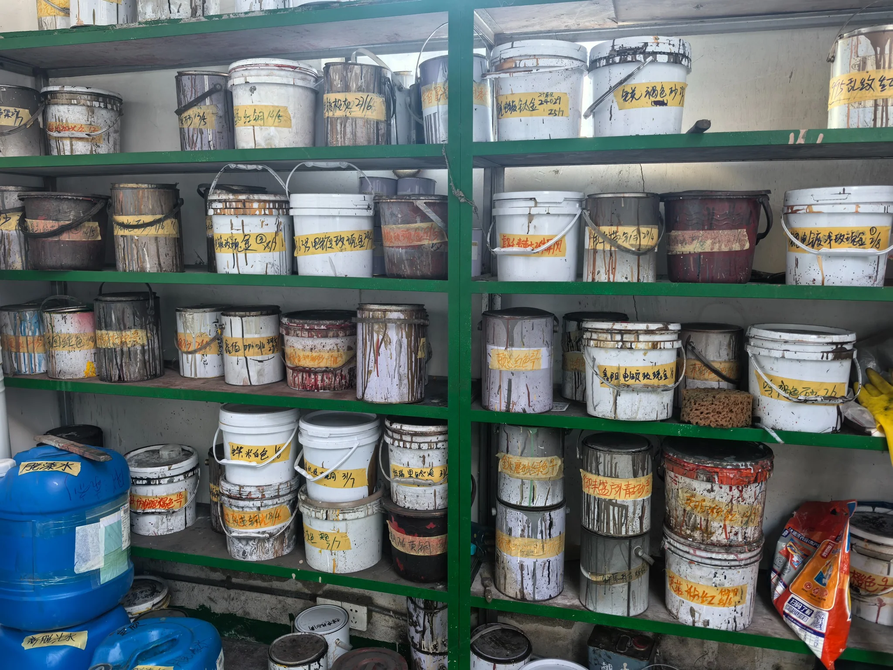
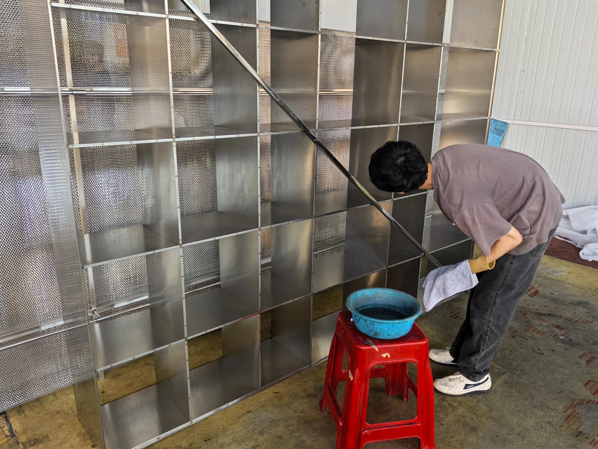
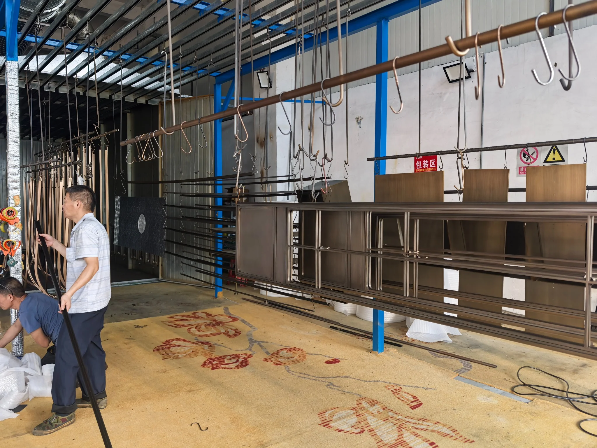
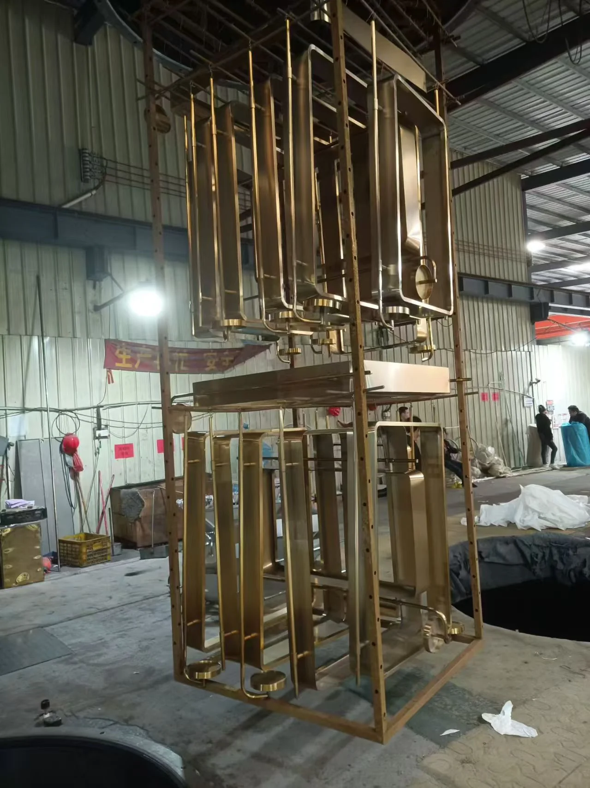
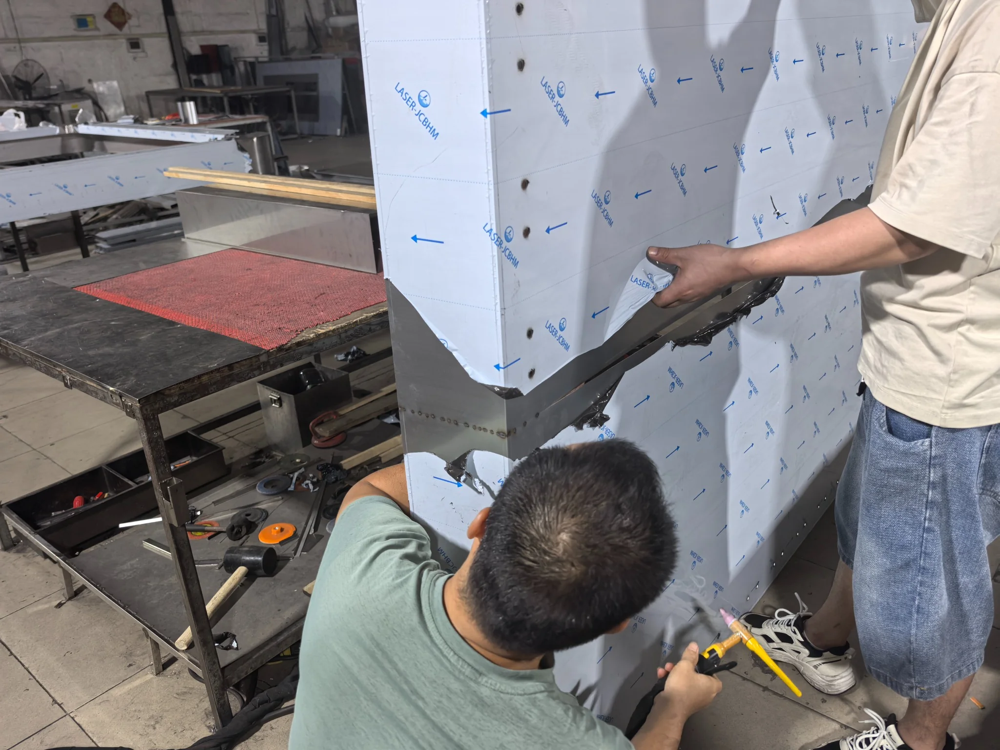
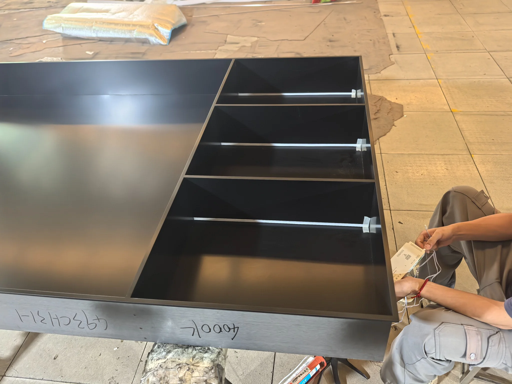
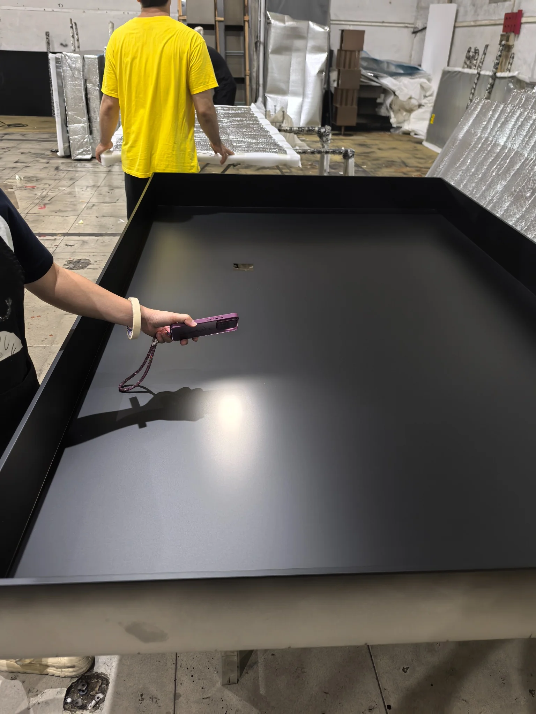
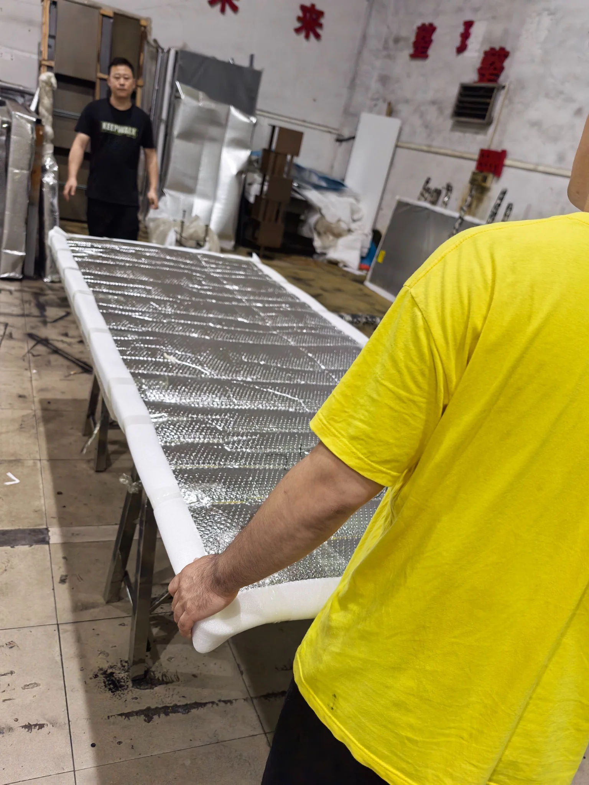
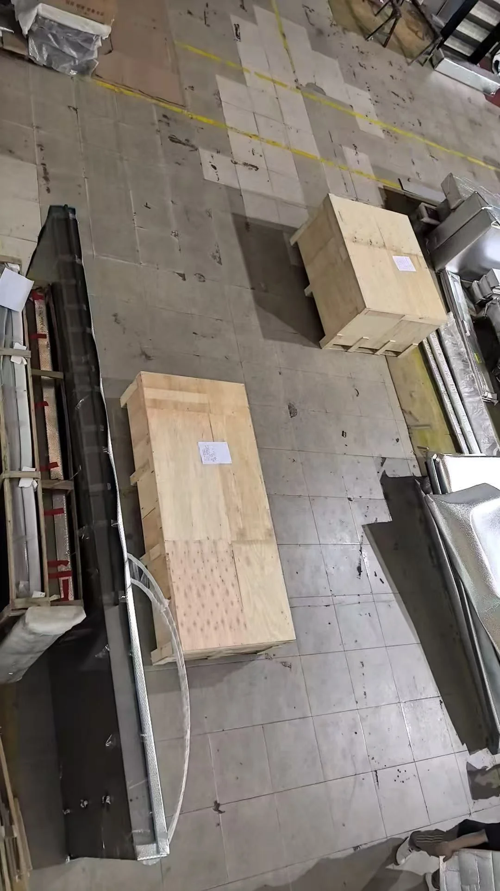
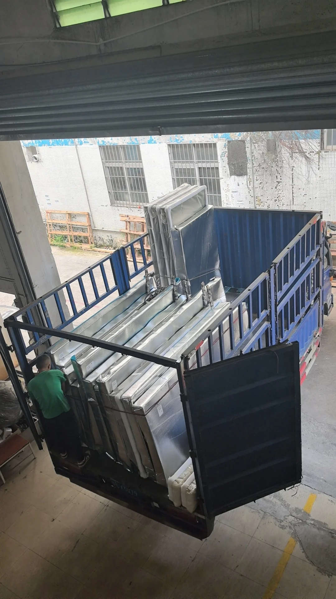

01
激光切割
真实生产片段，展示从板材加工到结构成型的核心工序。
 氟碳漆喷涂
氟碳漆喷涂 CAD 深化拆图
CAD 深化拆图 PVD 镀色成品
PVD 镀色成品根据客户尺寸、参考图片或设计图纸，工程人员在 CAD 中完成结构深化、尺寸复核和加工图拆分，为后续生产提供清晰依据。


当前展示 CAD 深化与拆图工作场景。根据客户提供的图纸、尺寸或参考图片，团队会先确认尺寸、材料、表面处理、颜色及结构做法，再完成深化拆图并对接后续生产。
完成拆图后，根据结构需求进行板材切割、刨槽、折弯、焊接、打磨及初步组装，使产品达到表面处理前的结构状态。
真实生产片段，展示从板材加工到结构成型的核心工序。
真实生产片段，展示从板材加工到结构成型的核心工序。
真实生产片段，展示从板材加工到结构成型的核心工序。
真实生产片段，展示从板材加工到结构成型的核心工序。
适合实色类表面处理，如哑光黑、喷砂香槟金、枪灰，或需要按样对色的产品，可进入氟碳漆表面处理流程。照片展示了油漆与颜色准备、表面清洗、挂件、喷涂及完成后的实况。

根据确认色样准备对应涂料和配套材料。

清洁工件表面，减少油污和杂质对涂层的影响。

按照喷涂和流转要求将工件悬挂固定。

在喷涂区域完成涂层施工，控制覆盖与外观均匀度。

完成喷涂和固化后，工件进入后续检查与回厂装配。
PVD 路线适用于香槟金、玫瑰金、钛金及其他金属色效果。当前照片展示清洗、挂件和镀色完成后的真实状态。



经过氟碳漆或 PVD 处理的部件回厂后，进行颜色与表面检查，并安装灯带、发光板、电源、控制模块及其他项目外设。

检查连接位置和结构状态，并完成项目所需附件与部件安装。

根据设计要求布置 LED 灯带、线路、电源及控制组件。

通过灯光观察表面反射，检查平整度、颜色一致性、划痕、边角及装配状态，并使用卷尺复核产品尺寸是否符合图纸及订单要求。
根据产品尺寸、表面和运输方式，使用珍珠棉、气泡保护、护角和定制木箱进行加固，完成复核后装车发货。

内包装与护角保护
定制出口木箱
装车与发货我们会根据产品结构、材料、表面处理、灯光配置、数量和交付目的地进行项目评估与报价。
申请项目报价